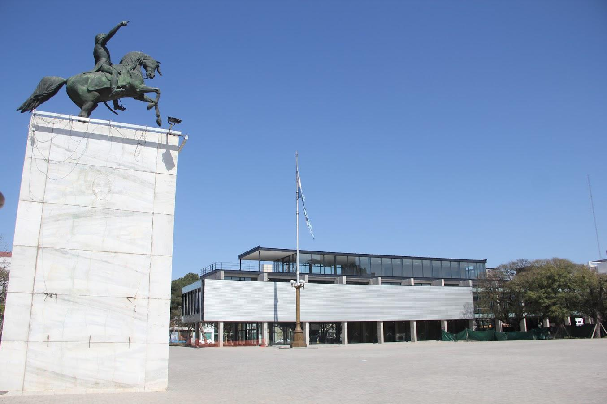
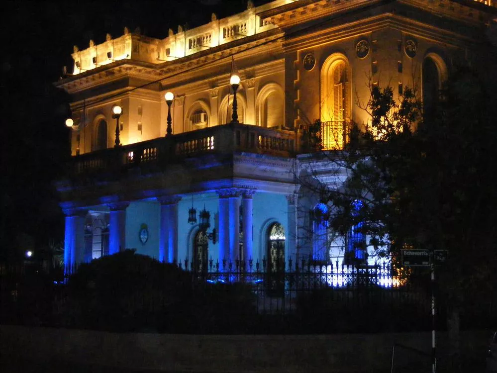
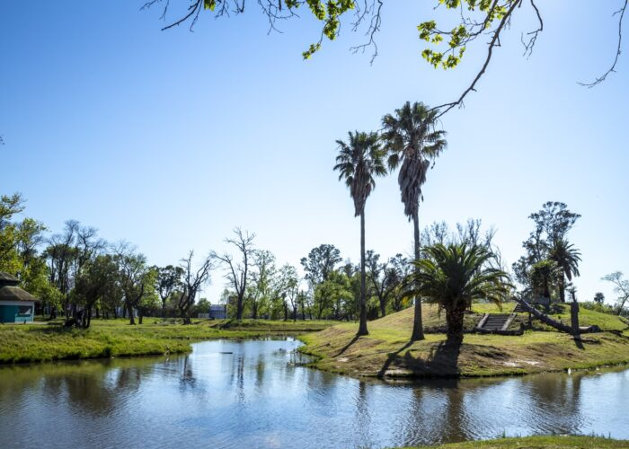

Plaza Civica/Monumento General San Martin
EEl 9 de marzo del ‘62, con el auxilio de una grúa procedente de Santa Fe, se realizó el montaje del
monumento ecuestre con un numeroso público que se detuvo para presenciar la tarea que exigió varias
horas de trabajo.
Según una crónica de la época del diario La Voz de San Justo, primero se subió el caballo y luego la
figura de San Marín. “Iluminado con los focos de la grúa, fue ascendiendo lentamente el perfil del
héroe, con la diestra señalando el camino de la libertad. A las 21 horas, terminó la tarea. Sobre el
blanco pie del mármol, de siete metros de altura, semejando un peñasco andino, estaba para siempre, en
la eternidad del bronce, el general San Martín montado sobre el brioso corcel de su campaña
emancipadora. En esa actitud vigilante y visionaria, señalando con el índice el paso de la cordillera,
queda para nosotros y para las generaciones que nos sucedan. Que todos comprendan que esa diestra
tendida hacia el oeste, señala la libertad, esa libertad que él aseguró para estos pueblos y que no
volverá a ser envilecida”, reseñó el artículo.

Palacio Tampieri
El Palacio Tampieri fue construido en la ciudad de San Francisco (Córdoba) en el año 1933, a pedido del
destacado empresario Ricardo Tampieri. Su construcción fue encomendada al arquitecto Rosarino de la Rúa
quien tardó 14 meses en la edificación, en ella trabajaron aproximadamente 70 empleados que durante todo
ese tiempo vivieron en la obra.
Los materiales llegaron en barco desde Europa, dado que la ciudad natal de Tampieri era Bolonia
(Italia).
La denominación «palacio» no es la adecuada, en realidad es un palacete ya que los palacios suelen tener
una cúpula, pero del conglomerado edilicio bien merece tal nombre, pues marca una acentuada diferencia
con las grandes construcciones de la ciudad.
Además es muy particular, porque existe una verdadera mezcla de estilos arquitectónicos en sus plantas,
por eso se lo llama ecléctico.
Posee un valor histórico muy importante, en principio por ser la sede del poder político de esta ciudad,
pero principalmente porque fue el resultado del poder que tuvo Tampieri en la época y lo que marcó el
fin de su imperio, por los gastos que generó su realización.

Parque Cincuentenario
Las relaciones políticas entre el intendente Serafín Trigueros de Godoy y su sucesor, el radical Raúl
Guillermo Villafañe en 1936, no fueron las mejores que se conocen en la historia de San Francisco, sin
embargo Villafañe llevó a la práctica al menos tres proyectos de Trigueros de Godoy que por distintas
razones no fueron realizados en su momento: el retiro de las instalaciones de Sportivo Belgrano y Tiro y
Gimnasia de su lugar en la actual plaza Vélez Sarsfield para unir a través de ella, según el proyecto de
Trigueros de Godoy, el Bv. Roca; la instalación de la Asistencia Pública en su actual ubicación para lo
que Trigueros de Godoy había comprado las instalaciones del Teatro Verdi, y la realización de un Parque
en los terrenos del basural de entonces que Trigueros de Godoy anunció el 30 de enero de 1935, hace 83
años.
Las tres ideas fueron llevadas a cabo por Villafañe en su administración progresista entre 1936 y 1940.
La Asistencia se inauguró allí el 26 de marzo de 1938; los clubes Sportivo Belgrano y Tiro y Gimnasia
fueron desplazados hasta sus sitios actuales solo que no se abrió Bv. Roca, sino la avenida Dante
Alighieri (actual Libertador Norte) para apoyar el plan de Villafañe de extender la ciudad hacia el
norte desde calle J. J. Paso, donde prácticamente terminaba la urbanización, hasta la avenida Rosario de
Santa Fe y el tercero: la realización del Parque Municipal.